A call da sua turma. Com tudo para jogar junto.
Converse por voz, compartilhe o jogo com áudio e aproveite a chamada com seus amigos. Gratuito, sem anúncios e com código aberto.
Windows, macOS e Linux (64 bits) ou qualquer navegador moderno
Entre com um apelido ou com uma conta. Só com apelido, seus dados ficam no dispositivo; para acessar sua identidade em outros dispositivos, crie uma conta. Para entrar no servidor da turma, peça o convite.
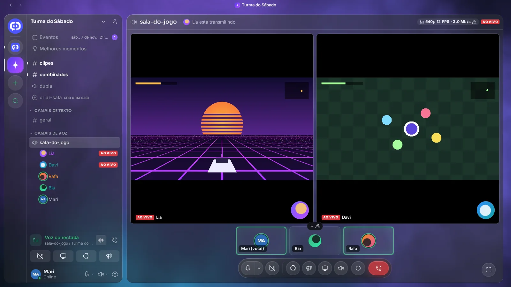
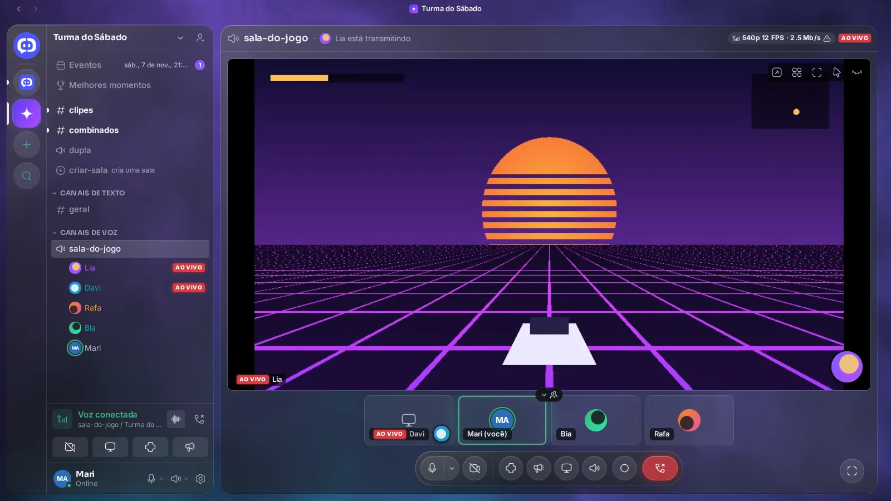
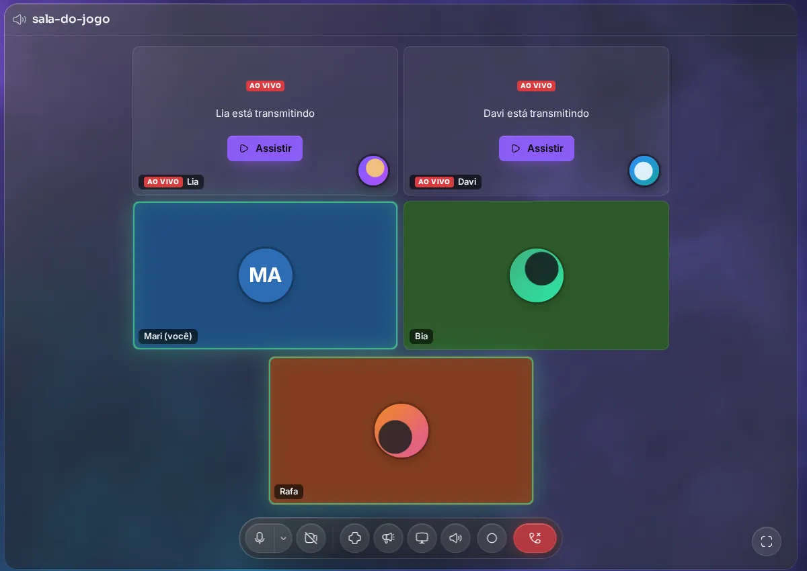
Acompanhe o squad de perto
Quem transmite escolhe o monitor ou só a janela do jogo. Quem assiste clica em Assistir: uma live em destaque, duas lado a lado, numa janela separada ou em tela cheia. Com a placa de vídeo codificando, a live vai até 1440p a 60 fps.
- O som do jogo vai junto. No app para Windows, a live leva o áudio do computador sem as vozes da chamada.
- Voz que não atrapalha. Supressão de ruído, detecção de voz ou push-to-talk, volume por pessoa e reconexão se a internet piscar.
- Com um jogo aberto, o nome dele aparece embaixo do seu, e um overlay no canto mostra quem está falando.
- Assistir e conversar: navegador e app
- Transmitir a tela: navegador e app
- Áudio do sistema, jogo detectado e overlay: só no app para Windows
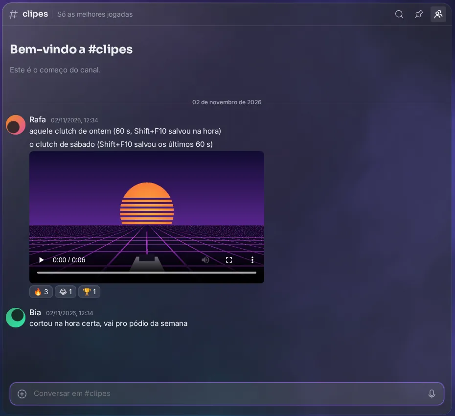
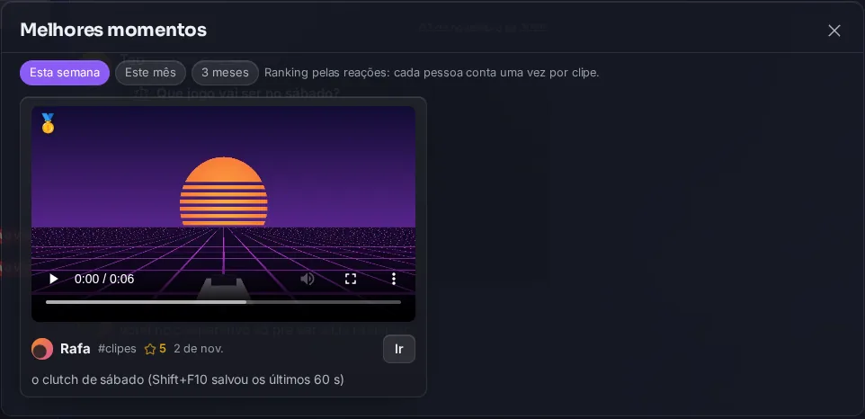
A jogada aconteceu. O clipe ficou.
Com um jogo aberto, o app guarda os últimos segundos da sua tela e do som do computador. Aperte Shift+F10 e o vídeo está salvo. Nada vai para o servidor até você querer.
- Corte e exporte. Arraste as bordas da linha do tempo, exporte o vídeo ou só o áudio. Som do jogo, voz da chamada e efeitos ficam em trilhas separadas.
- Compartilhe num canal ou conversa, com até 1 GB. Melhores momentos ranqueia os clipes do servidor pelas reações da semana, do mês ou de 3 meses.
- Grave a chamada inteira (vozes, câmeras e lives) e baixe em MP4 por 24 horas; depois ela some do servidor sozinha.
- Gravar clipes: só no app para Windows, com um jogo detectado
- Ver, reagir e baixar: navegador e app
- Gravar a chamada: app para computador
Música, vídeos e efeitos sonoros na mesma chamada
Para os intervalos entre uma partida e outra, ou para quem só entrou para conversar.
-
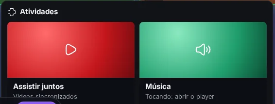
Música com fila e DJ
Cole um link de música ou de uma playlist inteira. Quem começa é o DJ e controla a fila; cada um ajusta o próprio volume. Toca no player oficial do serviço de vídeos, então anúncios podem aparecer para quem não tem assinatura.
- Navegador e app
-
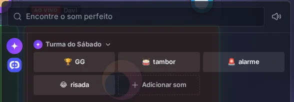
Efeitos sonoros da turma
Envie um MP3, OGG ou WAV, corte o trecho e dê um nome. Todo mundo na chamada ouve. Os sons de todos os seus servidores ficam no mesmo painel, e você pode mandar o áudio de um clipe direto para ele.
- Navegador e app
-
Assistir juntos e mensagens de voz
Um vídeo sincronizado para todo mundo: tocar, pausar e pular valem para o grupo. No chat, a caixa vazia vira um microfone para mandar um áudio de até 5 minutos. E tudo isso cabe no navegador do celular.
- Navegador (inclusive no celular) e app
16 temas, claros e escuros, e o visual Vidro
Cada tema vem com a própria cor de destaque, que você ajusta. O Vidro coloca painéis translúcidos sobre um fundo de luz que muda com o servidor aberto e respira quando alguém fala.
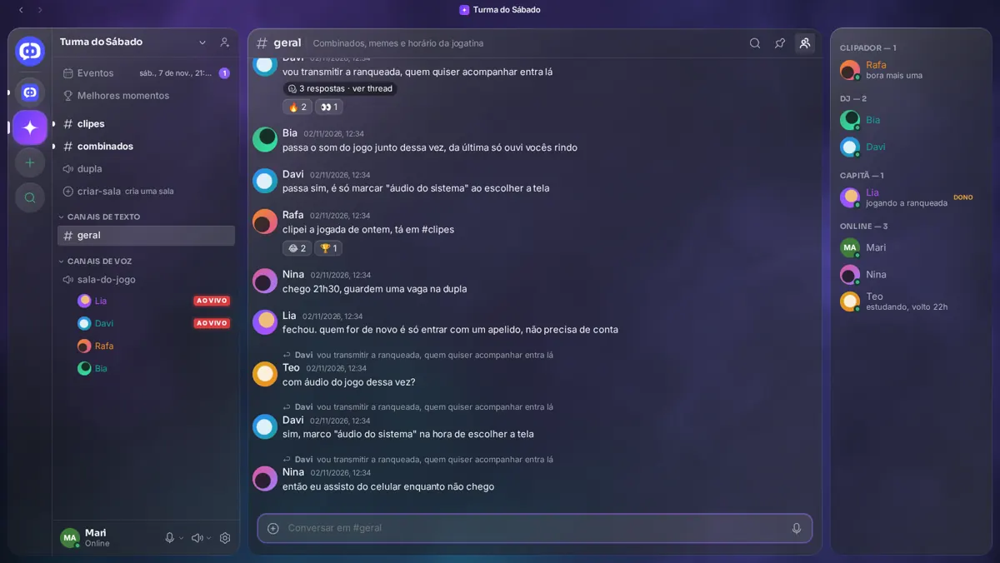
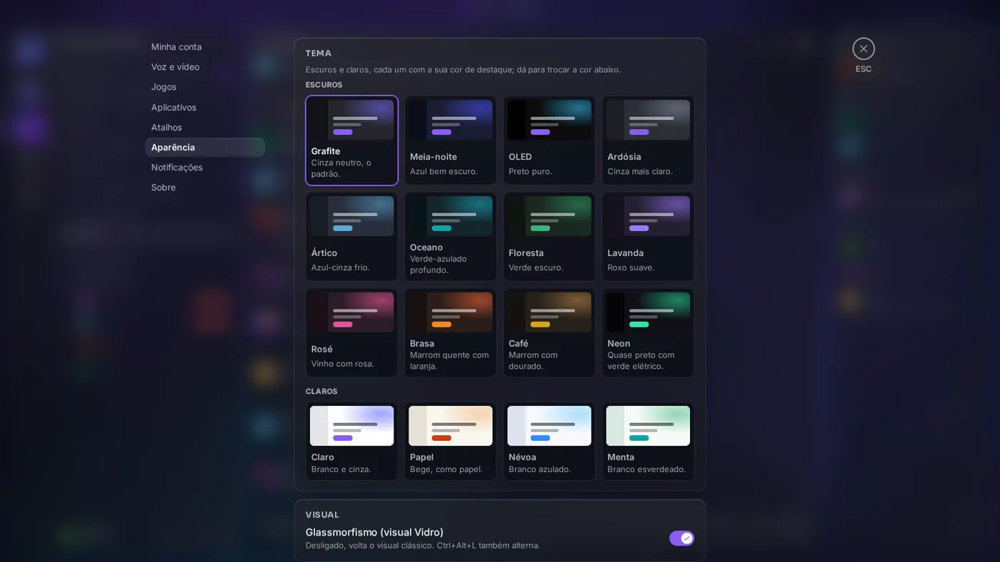
- Do seu jeito: cor de destaque, cantos, fonte (inclusive uma instalada no seu PC) e tamanho do texto, salvos na conta.
- Do jeito da turma: quem gerencia o servidor escolhe uma cor e um papel de parede que valem para todo mundo enquanto ele está aberto.
- Leve quando precisa: com um jogo aberto o fundo para, e dá para voltar ao visual clássico com Ctrl+Alt+L. No celular, o clássico assume.
- Temas: navegador e app
- Vidro: navegador e app no computador
Servidores para sua comunidade
Do grupo de quatro amigos ao servidor com cargos, canais por assunto e evento marcado. Servidores novos são privados até você convidar; o convite é um link ou um código.
-
Eventos
Marque a jogatina com dia, hora e canal de voz. Cada um responde Vou ou Talvez e recebe um lembrete 15 minutos antes, com o botão de entrar na chamada.
-
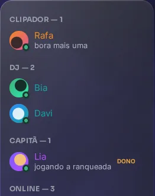
Cargos e permissões
Cargos com cor e permissões por canal. Dê e tire cargos pelo botão direito, ou deixe que as pessoas escolham reagindo a uma mensagem.
-
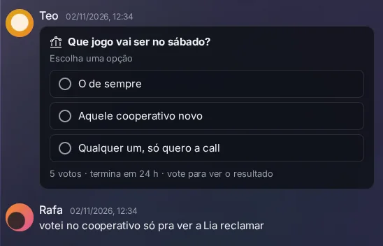
Enquetes
De 2 a 10 opções, uma ou várias escolhas, prazo de 1 hora a 1 semana. O resultado aparece em barras depois do seu voto.
-
Threads leves
Uma mensagem com respostas ganha 'ver thread': um painel ao lado, sem tirar as respostas da conversa. Mensagens fixadas, busca e markdown completam o chat.
-
Salas temporárias
Um canal 'criador de salas' dá a cada pessoa que entra uma sala própria, que some sozinha quando esvazia. Bom para a turma se dividir sem encher o servidor.
-
Sua comunidade já está no Discord?
Gere o link do modelo do servidor lá e cole em Criar servidor → Importar. Vêm categorias, canais de texto e voz, cargos com cores e permissões. Mensagens, membros, emojis e arquivos não fazem parte do modelo e não são importados.
Quero usar
O servidor opencord.pro já está no ar. Baixe o app ou abra no navegador, escolha um apelido e chame os amigos com um link de convite: quem abrir cai direto no servidor.
Quero hospedar
Hospede sua própria instância e tenha controle da infraestrutura e dos dados. A mesma stack que roda em opencord.pro sobe com Docker Compose; os instaladores podem ser gerados apontando para o seu servidor.
- Guia de self-hostingPasso a passo, runbook e checklist de rede antes de chamar os amigos
- Código-fonte no GitHubLicença AGPL-3.0; API, app e infraestrutura no mesmo repositório
- Deploy e instaladoresWorkflow que gera .exe, .dmg, .AppImage e .deb para o seu endereço
- Linux com Docker e Docker Compose (ou Node 24, pnpm, PostgreSQL 18 e Redis 8 para rodar sem contêiner).
- Dois nomes de domínio com TLS: um para a API e outro para o servidor de mídia.
- Portas abertas: 443/TCP; 7881/TCP e 50000–50100/UDP direto para a mídia; 3478 e 5349 para o TURN.
-
Bots
SDK
@opencord-chat/botno npm (MIT), com comandos de barra, botões, menus e modais. Os nomes seguem o que a comunidade de bots já conhece. Guia de bots -
Webhooks
Um link secreto por canal: qualquer programa que faça um POST publica ali, com o selo APP. Aceita o formato que os serviços já mandam para outros chats, então quase nada precisa mudar.
-
Ponte com o Slack
Ligue um canal de texto a um canal do Slack: o que é escrito num aparece no outro, com o nome de quem escreveu. Como configurar
O que você precisa saber antes de instalar
Projeto pessoal, em desenvolvimento aberto. Aqui está o que funciona onde, o que ainda falta validar e como o seu dado trafega.
-
Plataformas
Navegador no computador e no celular; app para Windows, macOS e Linux (64 bits). O desenvolvimento e os testes priorizam o Windows 11.
- Os instaladores ainda não têm assinatura digital. No Windows, o SmartScreen pode avisar: clique em "Mais informações" e depois em "Executar assim mesmo". No macOS, libere a primeira abertura em Ajustes do Sistema → Privacidade e Segurança.
- O app avisa quando há versão nova e só instala quando você clica em "Atualização pronta".
-
Limitações conhecidas
- Áudio do sistema na live, detecção do jogo, clipes, overlay e controle remoto existem só no app para Windows.
- Jogo em tela cheia exclusiva fica por cima do overlay e pode disputar a placa de vídeo com a live; janela sem borda e limitar o FPS do jogo ajudam.
- Em self-hosting, a mídia entre redes diferentes depende da sua rede: rode o checklist de rede do guia antes de chamar os amigos.
-
Criptografia e dados
Tudo trafega com TLS (HTTPS e WSS), e a voz e o vídeo vão cifrados até o servidor de mídia (SFU LiveKit), que os repassa a quem está na chamada. Não há criptografia de ponta a ponta: quem hospeda a instância tem acesso ao que passa por ela. Mensagens e arquivos ficam no banco da instância; clipes ficam no seu PC até você compartilhar. Senhas são guardadas com Argon2id.
-
Novidades e problemas
- O que mudou em cada versão: a linha do tempo "Novidades" na tela inicial do app e as releases no GitHub.
- Achou um bug? Abra uma issue no GitHub ou escreva em #reportar-bugs no servidor OpenCord: cai direto no quadro da equipe.
- Questão de segurança: veja a política de segurança.
Perguntas frequentes
É grátis mesmo?
Sim. O OpenCord é um projeto pessoal, sem fins lucrativos: sem plano pago, sem anúncios, sem venda de dados e sem limites artificiais. O código é aberto (AGPL-3.0). Se você hospedar o seu servidor, o único custo é o da máquina que escolher.
Preciso instalar alguma coisa?
Não. Dá para usar direto no navegador, no computador ou no celular. O app para computador existe para quem quer bandeja, atalhos globais, overlay e clipes. Transmitir o jogo com o áudio do sistema, por enquanto, só no app para Windows.
Preciso criar conta?
Não. Você pode entrar só com um apelido: a identidade fica salva naquele navegador ou computador. Se quiser usar o mesmo apelido em outro dispositivo, crie uma conta (apelido e senha; e-mail opcional). Quem entrou só com apelido pode criar a conta depois sem perder nada.
Como entro no servidor dos meus amigos?
Peça o convite: um link ou um código gerado por quem já está lá, em "Convidar pessoas". Ao entrar no OpenCord você já cai no servidor oficial, aberto a todo mundo; os outros servidores são privados.
A transmissão funciona no navegador?
Assistir, sim, em qualquer navegador moderno. Transmitir a tela também, mas o áudio do jogo junto com a live só sai do app para Windows, que captura o som do computador sem as vozes da chamada.
Quanta gente aguenta numa chamada?
A mídia passa por um servidor de mídia (SFU): quem transmite envia uma vez, e o servidor repassa a cada pessoa. O limite depende da máquina e da internet do servidor; o OpenCord foi pensado para grupos de amigos, não para auditórios.
O OpenCord tem relação com o Discord?
Não. É um projeto independente, com marca, interface e código próprios. A importação lê só a estrutura de um modelo de servidor que o dono gera por lá, por uma API pública, sem copiar mensagens ou membros.
Chama a turma.
Baixe, abra no navegador ou suba o seu próprio servidor. O resto é com vocês.